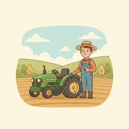
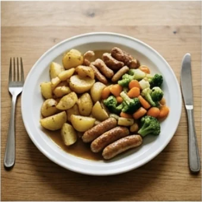

deutschoderwas · Sprechclub · Woche 5 · Strang C · Teil 1 · Montag, 12. Oktober
Wie gesund muss Essen sein? Fleisch, Zucker, Fertigessen — und was auf der Packung steht
Über Essen wird in Deutschland viel diskutiert und wenig gelesen. Dabei steht auf jeder Packung, was drin ist — man muss nur wissen, wo. Heute holen wir uns die Wörter dafür: die von der Packung und die für die Diskussion danach.
Dein Niveau
Gleiches Thema, andere Sätze. Wechsle jederzeit — probier ruhig beide Seiten aus.
Was steht eigentlich drauf?
Nimm irgendein Produkt aus deinem Schrank und dreh es um. Auf der Rückseite stehen drei verschiedene Dinge, die oft verwechselt werden: die Zutatenliste, die Nährwerttabelle und die Werbung. Nur zwei davon sind gesetzlich geregelt.
Liest du, was auf der Packung steht?
Worauf achtest du beim Einkaufen zuerst — Preis, Geschmack oder Inhalt?
Was hast du heute gegessen?
Woran erkennst du, ob ein Produkt wirklich hält, was die Vorderseite verspricht?
Hat sich dein Einkauf verändert, seit du hier lebst?
Wie viel Zeit ist dir gutes Essen wert — in Minuten und in Euro?
🔑 Zwei Regeln, die auf jeder Packung gelten: Die Zutatenliste ist nach Gewicht sortiert — was vorne steht, ist am meisten drin. Und die Nährwerttabelle bezieht sich immer auf 100 Gramm, nicht auf die Packung. Damit kannst du schon zwei Drittel aller Werbeversprechen selbst prüfen.
Worum es heute nicht geht
Diese Stunde ist keine Ernährungsberatung, und ich sage dir nicht, was du essen sollst. Wir üben die Sprache: die Wörter von der Packung, die Zahlen im Satz und die Sätze, mit denen man am Mittwoch darüber streiten kann. Was gesund ist, entscheidest du — und im Zweifel dein Arzt.
Redest du gern über Essen?
Gibt es bei euch ein Thema, über das man beim Essen nicht spricht?
Wer kocht bei euch zu Hause?
Warum wird über Ernährung so leidenschaftlich gestritten?
Wann wird ein Ratschlag zur Belehrung?
Wie reagierst du, wenn dir jemand ungefragt sagt, was du essen solltest?
💡 Für die Debatte am Mittwoch: Über Essen streitet man selten über Fakten und fast immer über Werte — Freiheit, Verantwortung, Geld, Zeit. Wer das erkennt, argumentiert ruhiger. Merk dir schon mal den Satz: „Da geht es eigentlich gar nicht um Zucker.“
Zwölf Wörter von der Packung bis zur Meinung
Sagt jedes Wort laut — mit Artikel. Und gleich einen Satz hinterher: Wo begegnet dir dieses Wort im Alltag?
die Zutatenliste
„In der Zutatenliste steht Zucker an zweiter Stelle.“
💡 Die Reihenfolge ist die eigentliche Information: Was vorne steht, ist am meisten drin. Steht Zucker unter den ersten drei Zutaten, ist viel davon enthalten — egal, was vorne auf der Packung steht.
die Angabe
„Die Angabe bezieht sich auf hundert Gramm.“
💡 Das wichtigste Wort beim Vergleichen. Immer nachfragen: Worauf bezieht sich die Angabe? Auf 100 Gramm, auf eine Portion oder auf die ganze Packung? Das verändert alles.
der Zuckergehalt
„Der Zuckergehalt ist höher, als ich dachte.“
💡 Zucker steht selten als „Zucker“ da. Er heißt auch Glukosesirup, Dextrose, Maltose oder Fruktosesirup. Und ohne Zuckerzusatz heißt nicht zuckerfrei — es heißt nur, dass keiner dazugegeben wurde.
das Fertiggericht
„Unter der Woche esse ich oft ein Fertiggericht.“
💡 Auch das Convenience-Produkt oder umgangssprachlich die Fertigpizza. Achtung im Gespräch: Das Wort klingt für viele wertend — sag lieber etwas Fertiges, wenn du niemanden angreifen willst.

die Herkunft
„Bei Fleisch muss die Herkunft angegeben werden.“
💡 Im Gespräch hörst du dafür meist regional oder aus der Region. Das ist kein geschütztes Wort — anders als bio, das an feste Regeln gebunden ist.
das Siegel
„Auf der Packung sind gleich drei Siegel.“
💡 Nicht jedes Siegel bedeutet dasselbe: Manche sind gesetzlich geregelt, andere hat sich der Hersteller selbst ausgedacht. Eine gute Frage für die Debatte: Wer vergibt das Siegel?

sich ernähren
„Er ernährt sich seit einem Jahr vegetarisch.“
💡 Immer mit sich, und es beschreibt die Gewohnheit, nicht die einzelne Mahlzeit. Ich esse gerade einen Apfel — aber ich ernähre mich gesund.
verzichten auf
„Ich verzichte unter der Woche auf Fleisch.“
💡 Immer mit auf + Akkusativ: auf Zucker verzichten, auf das Auto verzichten. Das Wort klingt nach Anstrengung — wer es vermeiden will, sagt ohne … auskommen.
frisch
„Frisch gekocht schmeckt es einfach anders.“
💡 Vorsicht bei der Werbung: frisch verpackt und Frischkäse sagen nichts über das Alter. Nur Frischfleisch und das Datum auf der Packung sind belastbar.
der Aufwand
„Selbst kochen ist mir unter der Woche zu viel Aufwand.“
💡 Das ehrlichste Wort in dieser Debatte. Fast jeder Streit über Fertigessen ist in Wahrheit ein Streit über Zeit — und dieses Wort bringt ihn auf den Punkt.
genießen
„Einmal in der Woche genieße ich einfach.“
💡 Das Gegenargument in jeder Ernährungsdebatte: Essen ist nicht nur Nährstoff. Merk dir das Nomen dazu — der Genuss — und den Satz Das gönne ich mir.
die Empfehlung
„Die offizielle Empfehlung liegt bei fünf Portionen am Tag.“
💡 Wichtig für sauberes Argumentieren: Eine Empfehlung ist keine Vorschrift. Und im Streitgespräch lohnt immer die Frage: Von wem stammt die Empfehlung?
💡 Spiel „Dreh es um“: Jeder holt ein Produkt aus der Küche und liest der Runde nur die Zutatenliste vor — ohne den Namen zu verraten. Die anderen raten, was es ist. Danach: An welcher Stelle stand der Zucker?
Zutatenliste, Nährwerttabelle, Werbung — was ist was?
Auf jeder Verpackung stehen drei ganz verschiedene Arten von Text nebeneinander. Zwei davon sind vorgeschrieben, einer ist frei erfunden. Wer sie auseinanderhält, liest jede Packung in zehn Sekunden.
📋
die Zutatenliste
vorgeschrieben, sortiert nach Gewicht
Weizenmehl, Zucker, Palmöl, Kakao …
🔢
die Nährwerttabelle
vorgeschrieben, immer pro 100 Gramm
davon Zucker: 34 g pro 100 g
📣
die Werbung vorne
frei formuliert, rechtlich fast nichts wert
„mit dem Guten aus der Natur“
✅ Belastbar
In der Zutatenliste steht Zucker an zweiter Stelle.
Warum das etwas sagtDie Liste ist nach Gewicht sortiert. Platz zwei heißt: Nach der Hauptzutat kommt sofort der Zucker. Das ist eine harte Information, die jeder nachprüfen kann.
❌ Nicht belastbar
Vorne steht „ohne Zuckerzusatz“, also ist kein Zucker drin.
Das ProblemOhne Zuckerzusatz heißt nur: Es wurde keiner dazugegeben. Der Zucker, der von Natur aus drin ist — etwa im Fruchtsaftkonzentrat — bleibt und zählt trotzdem.
✅ Sauber verglichen
Pro hundert Gramm hat A doppelt so viel Zucker wie B.
Warum das stimmtBeide Angaben beziehen sich auf dieselbe Menge. Nur so darf man vergleichen — und deshalb steht in der Tabelle immer 100 Gramm.
❌ Unsauber verglichen
In der Packung A ist mehr Zucker als in Packung B.
Das ProblemWenn A dreimal so groß ist wie B, sagt das gar nichts. Pro Packung lässt sich alles beweisen — pro 100 Gramm nichts beschönigen.
✅ Ein sauberes Argument
Ich finde, dass Zucker in Kinderprodukten gekennzeichnet gehört.
Warum das trägtEs ist eine Forderung mit Grund, die man annehmen oder ablehnen kann. Damit lässt sich diskutieren, ohne dass jemand sich persönlich angegriffen fühlt.
❌ Kein Argument
Wer so etwas kauft, hat es nicht besser verdient.
Das ProblemDas ist ein Urteil über Menschen, nicht über die Sache. Solche Sätze beenden jede Debatte — und in der Sache haben sie nichts bewiesen.
Vier Blicke, immer in dieser Reihenfolge:
Dreh sie um. Die Vorderseite ist Werbung, die Rückseite ist Information.
Lies die ersten drei Zutaten. Mehr brauchst du nicht — der Rest ist mengenmäßig klein.
Such in der Tabelle die Zeile „davon Zucker“. Sie steht immer unter den Kohlenhydraten.
Prüfe den Bezug. Steht da pro 100 g oder pro Portion? Wenn Portion: Wie groß ist die?
Und ein Satz, der jede Werbeaussage prüft: „Woran erkenne ich das auf der Rückseite?“ Wenn es dort nicht auftaucht, war es Werbung.
🎯 Zu zweit, eine Minute: Einer nennt eine Werbeaussage — „reich an Vitaminen“, „natürlich“, „ohne Zuckerzusatz“, „aus der Region“. Der andere sagt, wo man das auf der Rückseite überprüfen könnte — oder dass man es gar nicht kann.
Vier Bausteine, und du bist in der Debatte
Zahlen nennen, vergleichen, einordnen, Position beziehen. Vier Handgriffe, mit denen du am Mittwoch mitdiskutieren kannst, ohne dich zu verrennen.
1 · 🔢 Zahlen nennen pro hundert Grammetwa ein Dritteljeder Vierteim Schnitt
So klingt esPro hundert Gramm sind da fast dreißig Gramm Zucker drin.
2 · ⚖️ Vergleichen doppelt so viel wiedeutlich weniger alsgenauso viel wieim Vergleich zu
So klingt esDas enthält doppelt so viel Zucker wie das andere.
3 · 🧭 Einordnen Das klingt viel, aber …Man muss dazusagen, dass …Es kommt darauf an, wie oft …Entscheidend ist eher …
So klingt esDas klingt viel, aber entscheidend ist, wie oft man es isst.
4 · 🎯 Position beziehen Ich finde, dass …Mir ist wichtig, dass …Ich hätte nichts dagegen, wenn …Für mich ist die Grenze da, wo …
So klingt esFür mich ist die Grenze da, wo es um Kinder geht.
1 · 🔍 Die Angabe prüfen Worauf bezieht sich die Zahl?Das ist pro Portion gerechnet, nicht pro hundert GrammWer hat das erhoben?In welchem Zeitraum?
So klingt esWorauf bezieht sich die Zahl — auf hundert Gramm oder auf die ganze Packung?
2 · 📈 Entwicklungen beschreiben Je mehr …, desto …Der Anteil ist um ein Drittel gestiegenTendenziell nimmt das zuÜber die Jahre hat sich …
So klingt esJe günstiger ein Produkt sein soll, desto mehr wird an der Qualität gespart.
3 · 🪞 Den Kern benennen Da geht es eigentlich gar nicht um …Im Grunde ist das eine Frage von …Der eigentliche Streitpunkt ist …Wir reden über zwei verschiedene Dinge
So klingt esDa geht es eigentlich gar nicht um Zucker, sondern um Zeit und Geld.
4 · 🤝 Zugestehen und trotzdem bleiben Da haben Sie recht — allerdings …Das gilt allerdings nur, wenn …Ich gebe zu, dass …Dennoch halte ich daran fest, dass …
So klingt esDa haben Sie recht — allerdings gilt das nur für die, die auch Zeit dafür haben.
Verb das Produkt die Zahl Höflichkeit
📣 Sofort anwenden: Nimm ein Produkt, das du regelmäßig kaufst, und sag vier Sätze dazu — eine Zahl, ein Vergleich, eine Einordnung, deine Position. Genau diese vier Schritte macht am Mittwoch die ganze Debatte aus.
Vier Situationen — zwei Runden
Runde 1: Lest den Dialog zu zweit laut. Runde 2: Klappt die Zeilen zu und spielt ihn frei — mit euren eigenen Beispielen.
Dialog 1 · „Vor dem Regal“
Ihr steht vor zwei ähnlichen Produkten und vergleicht. Einer liest die Rückseite, einer schaut auf den Preis.
A
Das hier ist im Angebot. Nehmen wir das?
B
Moment, ich dreh es kurz um. Zucker steht an zweiter Stelle.
🗣️ umdrehen und die ersten Zutaten lesen — das ist der ganze Trick. Platz zwei heißt: viel davon.tippen = Hilfe zeigen
A
Und das andere?
B
Da steht er an sechster. Pro hundert Gramm ist es fast halb so viel.
🗣️ pro hundert Gramm — nur so darf man vergleichen. Und halb so viel statt einer nackten Zahl.tippen = Hilfe zeigen
A
Es kostet aber einen Euro mehr.
B
Stimmt. Dann ist das eher eine Geldfrage als eine Zuckerfrage.
🗣️ Den eigentlichen Punkt benennen, statt weiterzustreiten. Sehr nützlicher Satz.tippen = Hilfe zeigen
A
Nehmen wir diese Woche das teurere und schauen, ob wir den Unterschied merken.
B
Einverstanden. Und wenn nicht, wissen wir es auch.
🗣️ Eine Einigung, die nichts festlegt — funktioniert im Alltag oft besser als eine Grundsatzentscheidung.tippen = Hilfe zeigen
Dialog 2 · „Beim Gesundheitscheck“
Du bist beim Arzt, und es geht um deine Ernährung. Du willst ehrlich sein, ohne dich zu rechtfertigen.
A
Wie ernähren Sie sich denn so im Alltag?
B
Unter der Woche eher schnell — oft etwas Fertiges. Am Wochenende koche ich frisch.
🗣️ sich ernähren beschreibt die Gewohnheit. Und ein ehrlicher, konkreter Satz statt einer Entschuldigung.tippen = Hilfe zeigen
A
Und wie viel Gemüse ungefähr?
B
Ehrlich gesagt weniger, als die Empfehlung sagt. Vielleicht zwei Portionen am Tag.
🗣️ die Empfehlung als Bezugspunkt nennen — sachlich, ohne sich klein zu machen.tippen = Hilfe zeigen
A
Das ist schon mal eine gute Grundlage. Woran scheitert es?
B
Am Aufwand. Ich komme um sieben nach Hause, und dann ist Kochen die letzte Hürde.
🗣️ der Aufwand — das ehrliche Wort. Damit lässt sich arbeiten, mit „keine Lust“ nicht.tippen = Hilfe zeigen
A
Dann suchen wir etwas, das in zehn Minuten geht.
B
Das würde mir tatsächlich helfen.
🗣️ Annehmen, was hilft — und ruhig sagen, dass es hilft.tippen = Hilfe zeigen
Dialog 3 · „Der ungefragte Ratschlag“
Beim gemeinsamen Essen kommentiert jemand, was auf deinem Teller liegt. Du bleibst freundlich — und setzt trotzdem eine Grenze.
A
Weißt du eigentlich, wie viel Zucker da drin ist?
B
Ungefähr, ja. Ich esse es trotzdem — heute genieße ich einfach.
🗣️ genießen ist hier das Argument. Ruhig, ohne Rechtfertigung, ohne Gegenangriff.tippen = Hilfe zeigen
A
Ich sag ja nur. Ich verzichte seit einem Jahr komplett darauf.
B
Das finde ich beachtlich. Für mich wäre das nichts, aber jedem das Seine.
🗣️ Erst anerkennen, dann abgrenzen. verzichten auf steht hier beim anderen — du übernimmst das Wort, nicht die Haltung.tippen = Hilfe zeigen
A
Merkst du denn keinen Unterschied?
B
Ehrlich gesagt reden wir gerade weniger über Zucker als über Lebensstil. Und da sind wir eben verschieden.
🗣️ Den Kern benennen: Da geht es eigentlich um etwas anderes. Damit endet die Belehrung meistens.tippen = Hilfe zeigen
A
Da hast du wahrscheinlich recht.
B
Probier mal — das schmeckt wirklich gut.
🗣️ Mit etwas Warmem schließen. Die Grenze steht, die Stimmung bleibt.tippen = Hilfe zeigen
Dialog 4 · „Kochen für die Woche“
Ihr überlegt, wie ihr unter der Woche besser esst, ohne mehr Zeit zu haben. Ein praktisches Gespräch, keine Grundsatzdebatte.
A
Ich schaffe es einfach nicht, jeden Abend zu kochen.
B
Musst du auch nicht. Ich koche sonntags einmal groß, dann reicht es für drei Tage.
🗣️ Ein konkreter Vorschlag statt eines Ratschlags. Und die Zahl macht ihn glaubwürdig.tippen = Hilfe zeigen
A
Und das schmeckt am dritten Tag noch?
B
Suppe und alles mit Soße ja. Salat eher nicht, das mache ich frisch.
🗣️ Ehrlich unterscheiden, was funktioniert und was nicht — das ist überzeugender als jedes Versprechen.tippen = Hilfe zeigen
A
Wie viel Zeit brauchst du dafür am Sonntag?
B
Etwa eine Stunde. Im Vergleich zu fünf Abenden ist der Aufwand deutlich kleiner.
🗣️ im Vergleich zu und der Aufwand — der Vergleich ist hier das ganze Argument.tippen = Hilfe zeigen
A
Gut, das probiere ich diese Woche.
B
Sag mir am Freitag, ob du durchgehalten hast.
🗣️ Eine Verabredung am Ende macht aus einem Vorsatz einen Plan.tippen = Hilfe zeigen
🎭 Und jetzt ihr: Spielt Dialog 3 mit vertauschten Rollen — einmal seid ihr die Person, die kommentiert, einmal die, die abgrenzt. Achtet darauf, wie unterschiedlich sich beide Seiten anfühlen.
🧩 Mit Zahlen sprechen: pro, im Vergleich zu, je … desto
In einer Debatte über Essen fliegen ständig Zahlen durch den Raum. Wer sie sauber in Sätze packt, wirkt sofort glaubwürdiger — und merkt schneller, wenn jemand mit ihnen trickst.
Eine Zahl allein sagt nichts. Sie braucht immer einen Bezug: pro hundert Gramm, pro Tag, im Vergleich zu. Fehlt der Bezug, kann man mit derselben Zahl das Gegenteil beweisen — und genau das passiert in Ernährungsdebatten laufend. Heute lernst du drei Werkzeuge: den Bezug mit pro, den Vergleich mit so viel wie und die Entwicklung mit je … desto.
📏pro = worauf sich die Zahl bezieht34 Gramm Zucker pro hundert Gramm.
▾
⚖️so viel wie = der VergleichDoppelt so viel Zucker wie das andere.
▾
📈je … desto = zwei Dinge hängen zusammenJe billiger, desto mehr Zusatzstoffe.
▾
🔍und immer die RückfrageWorauf bezieht sich die Zahl?
Die Zahl34 Gramm
Was?Zucker
Bezugpro
Mengehundert Gramm.
Vergleichen ohne sich zu verheddern
Drei Muster, mehr braucht man nicht. Achte auf das kleine Wort danach — wie oder als entscheidet sich daran, ob verglichen oder unterschieden wird.
🟰
so … wie bei Gleichheit
auch bei doppelt, halb, dreimal
doppelt so viel wie · genauso viel wie
↔️
als bei Unterschied
nach mehr, weniger, größer, besser
mehr als · weniger als · besser als
📊
um bei Veränderung
wie stark etwas gestiegen oder gefallen ist
um ein Drittel gestiegen
gleich viel → genauso viel Zucker wie das anderemehr → deutlich mehr Zucker als das anderedas Doppelte → doppelt so viel wie das anderedie Hälfte → halb so viel wie das andereein Anteil → etwa ein Drittel des Tagesbedarfseine Veränderung → um ein Fünftel gestiegen
je … desto und der Satzbau dahinter
Zwei Satzteile, zwei verschiedene Stellungen — das ist der einzige schwierige Punkt. Lies die Beispiele laut, dann sitzt es.
1️⃣
Im je-Teil ans Ende
das Verb steht ganz hinten, wie im Nebensatz
Je billiger ein Produkt ist, …
2️⃣
Im desto-Teil an zweiter Stelle
desto plus Vergleichsform, dann das Verb
… desto mehr wird gespart.
✂️
Kurzform ohne Verb
geht bei festen Wendungen
Je später der Abend, desto …
Je billiger ein Produkt ist, desto mehr wird gespart.Je öfter man selbst kocht, desto weniger Fertiges kauft man.Je genauer man liest, desto seltener wird man überrascht.Je später der Abend, desto größer der Hunger.
🧱 Bau die Sätze selbst
Tippe die Teile in der richtigen Reihenfolge an. Bei je … desto steht das Verb im ersten Teil ganz hinten.
📖 Und jetzt im Zusammenhang
Ein Einkauf und ein Gespräch danach. Wähle für jede Lücke das passende Wort.
Eine einzige Frage entscheidet:
Sind die beiden gleich? Dann wie. genauso viel wie, doppelt so viel wie, halb so groß wie.
Sind sie verschieden? Dann als. mehr als, weniger als, besser als, teurer als.
Der Merksatz: Wo eine Steigerungsform steht (mehr, weniger, größer), kommt als. Wo so steht, kommt wie.
Und die häufigste Falle:doppelt so viel enthält ein so — also wie, obwohl es nach Unterschied klingt.
Ein Satz mit beiden zum Auswendiglernen: „Das kostet mehr als das andere, enthält aber nur halb so viel Zucker wie das andere.“
🎭 Drei Situationen zu zweit
Einer bringt ein Anliegen, einer hält dagegen. Danach tauschen — und beim zweiten Mal ohne Notizen.
1 · Zwei Packungen, eine Entscheidung
A und B stehen im Supermarkt vor zwei Produkten. A achtet auf den Preis, B auf die Zutatenliste. Ihr müsst euch am Ende auf eines einigen — und die Entscheidung begründen.
Das ist im AngebotDa steht Zucker an zweiter StellePro hundert Gramm ist es wenigerWas ist dir wichtiger?
Worauf bezieht sich die Angabe?Im Vergleich zu dem anderen ist das …Da geht es eigentlich um Geld, nicht um ZuckerEinigen wir uns darauf, dass …
✅ Eine gute Runde enthältBeide haben mindestens eine Zahl mit korrektem Bezug genannt (pro hundert Gramm) und einen sauberen Vergleich gebaut. Die Entscheidung wurde begründet, nicht nur getroffen.
2 · Der ungefragte Ratschlag
A kommentiert, was B isst — freundlich gemeint, aber belehrend. B bleibt höflich, setzt aber eine Grenze und benennt einmal, worum es eigentlich geht.
Weißt du, wie viel Zucker da drin ist?Ich verzichte komplett daraufDas würde ich nicht essenIch sag ja nur
Das finde ich beachtlich, für mich wäre es nichtsHeute genieße ich einfachDa geht es eigentlich gar nicht um ZuckerIch entscheide das lieber selbst
✅ Eine gute Runde enthältB ist weder eingeknickt noch laut geworden. Der Satz Da geht es eigentlich um … kam mindestens einmal — und danach hat sich das Gespräch verändert.
3 · Vorbereitung auf Mittwoch
A vertritt: Der Staat soll sich einmischen — Kennzeichnung, Zuckersteuer, Regeln fürs Schulessen. B vertritt: Das ist Sache der Einzelnen. Jeder muss ein Argument der Gegenseite anerkennen, bevor er widerspricht.
Ich finde, dass …Mir ist wichtig, dass …Bei Kindern ist das etwas anderesDas sehe ich anders
Da haben Sie recht — allerdings …Das gilt nur, wenn …Je mehr man vorschreibt, desto …Ich gebe zu, dass …
✅ Eine gute Runde enthältJeder hat mindestens einmal ein Argument der Gegenseite anerkannt, bevor er widersprochen hat. Und niemand hat über Menschen geurteilt, sondern über die Sache.
🎴 Sprechkarten
Zieh eine Karte und sprich mindestens vier Sätze am Stück.
Deine Aufgabe
Tippe auf den Knopf.
⏱️ Die 90-Sekunden-Challenge
Ein Thema, anderthalb Minuten, freies Sprechen. Nicht recht haben — sondern eine Position aufbauen, die jemand verstehen kann.
Dein Wort
die Zutatenliste
1:30
Geh die vier Bausteine entlang, dann trägt dich die Zeit:
Eine Zahl mit Bezug: Pro hundert Gramm sind da …
Ein Vergleich: Das ist doppelt so viel wie …
Eine Einordnung: Das klingt viel, aber entscheidend ist …
Deine Position: Für mich ist die Grenze da, wo …
Und wenn du keine Zahl hast, sag es ehrlich: „Ich habe die genaue Zahl nicht im Kopf, aber der Punkt ist …“ Das ist stärker als eine erfundene Zahl — und in einer Debatte merkt jeder den Unterschied.
⏱️ Spielregel: In jeder Runde müssen eine Zahl mit Bezug und ein Vergleich mit wie oder als vorkommen. Der Partner hört auf das kleine Wort und hebt die Hand, wenn wie und als vertauscht wurden.
✅ Sitzt es schon?
8 Fragen. Tippe auf deine Antwort — die Erklärung kommt sofort.
✍️ Lückentext
Wähle in jeder Lücke das passende Wort.
📣 Danach laut: Jeder nennt reihum ein Lebensmittel. Der Nachbar baut sofort einen Vergleichssatz mit wie oder als. Wer das falsche Wort nimmt, sagt den Satz noch einmal richtig und gibt dann weiter.
📮 Deine Hausaufgabe bis Mittwoch
Vier kleine Aufgaben, zusammen etwa 25 Minuten. Am Mittwoch ist Debatte — mit dem, was du hier vorbereitest, gehst du nicht mit leeren Händen hinein.
💡 Warum das hilft: Zahlen sauber in Sätze zu packen ist nicht nur beim Essen nützlich. Miete, Gehalt, Nebenkosten, Arbeitszeit — überall im deutschen Alltag musst du Angaben vergleichen und dabei sagen können, worauf sie sich beziehen.
0 von 0 Aufgaben geschafft.
So sehen saubere Vergleichssätze aus:
Der Joghurt enthält doppelt so viel Zucker wie der andere.
Diese Packung kostet mehr als die andere.
Pro hundert Gramm ist es genauso viel wie bei der Konkurrenz.
Das Müsli hat weniger als die Hälfte davon.
Der Anteil ist um ein Drittel höher als letztes Jahr.
Ein einziger Test: Steht ein „so“ im Satz? Dann kommt wie. Steht eine Steigerungsform (mehr, weniger, höher)? Dann kommt als.
So bereitet man eine Debatte vor, bei der man nicht überrollt wird:
Drei eigene Argumente, jedes in einem Satz — kein Absatz, ein Satz.
Zu jedem der Gegenseite die stärkste Fassung, nicht die schwächste. Wer nur die schwache Version kennt, verliert.
Zu jedem eigenen Argument die Schwachstelle. Wenn du sie zuerst nennst, nimmst du sie dem anderen weg.
Eine Zahl, deren Bezug du wirklich kennst. Eine reicht — falsch erinnerte Zahlen kosten mehr, als sie bringen.
Ein Satz zum Einlenken:Da haben Sie recht — allerdings …
Wer die Gegenseite besser formulieren kann als sie selbst, wirkt in jeder Debatte souverän — und merkt manchmal, dass die eigene Position nachgeschärft werden muss.
📬 Abgabe: Schick deine Sprachnachricht und die Argumente bis Dienstagabend. Ich schaue vor allem darauf, ob deine Zahlen einen Bezug haben — das ist der Punkt, an dem am Mittwoch die meisten Argumente kippen.
🔜 Am Mittwoch, Teil 2:Die Debatte — Zuckersteuer und Schulessen. Zwei konkrete Streitfragen, Redemittel für Pro und Contra, und die Übung, die Gegenseite besser zu formulieren als sie selbst.